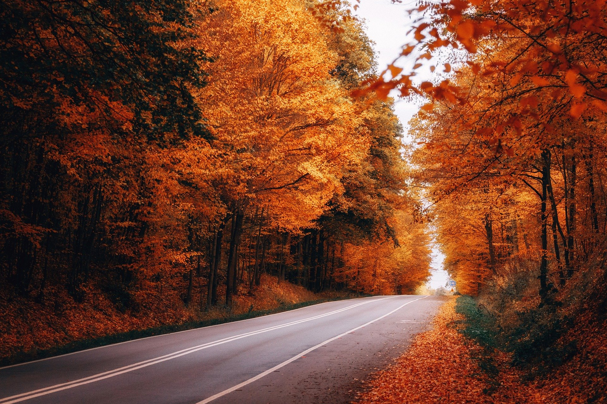

Осень
Осень — самое красивое время года. Нельзя не восхищаться той красотой, которую дарит осенняя природа. Иногда просто слов не хватает описать все это великолепие, только художник может передать осенний пейзаж. Красива пора золотой осени!
Осень — самое красивое время года. Нельзя не восхищаться той красотой, которую дарит осенняя природа. Иногда просто слов не хватает описать все это великолепие, только художник может передать осенний пейзаж. Красива пора золотой осени!
В прохладные месяцы рыба становится менее активной и концентрируется в небольших зонах водоема. Перспективными местами для лова являются мелководные участки с подводной флорой, перепадами глубин, а также зоны с умирающими зарослями кувшинок. Глубокие зоны, начиная с 2,5–3 метров с ямами и пологими склонами, также могут быть продуктивными. Особое внимание стоит уделить сваям мостов, где замедляется течение и собирается рыба.
С наступлением осени у кабана в организме словно срабатывает «тумблер». Он провоцирует выработку особой запаховой жидкости, и кабан начинает обживать территорию. Тут потрётся, там почешет спину. Так самцы намекают о своих претензиях к территории, а под шумок — сообщают своим дамам, где их искать. Рандеву состоится в любом случае, ведь «барышни» тоже не лыком шиты. Они также метят территорию. Главное сейчас — успеть заявить о себе в дремучем лесу.
Утки принимают решение о миграции тогда, когда становится мало пищи, замерзает земля и водоёмы, наступают морозы. В октябре-ноябре утки совершают долгое, сложное путешествие в тёплые края.
Начало осени — самое урожайное время для грибов. Именно в это время в наших лесах обильно растут самые ценные и вкусные породы: маслята, подберезовики, подосиновики, вешенки, сморчки, опята, лисички, моховики, грузди, рыжики и, конечно, самые ценные белые грибы. Сентябрь — последний месяц для сбора луговых опят, подберезовиков, маслят, настоящих лисичек, белых зонтиков, сыроежек. Летние опята, белые грибы, подосиновики, пестрые зонтики, грузди и еловые рыжики продержатся до октября.